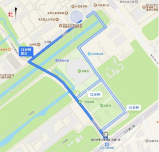

学院通知 · 科研创新
中国新闻史学会外国新闻传播史专业委员会2025学术年会“全球南方与国际传播论坛”第2号通知
发布时间：2025-11-06
当前全球格局深度变革的形势下，国际传播领域正经历着前所未有的重大转变。为探讨数智时代建立国际话语协同体系的本土经验，应对国际传播领域所面临的挑战、突破现有困境，中国新闻史学会外国新闻传播史专业委员会拟定于 2025年11月8日举办“全球南方与国际传播”学术年会。本次年会由四川大学文学与新闻学院承办。 一、会议主题： 全球南方与国际传播 二、会议论题： 本次学术年会拟在上午集中大会之后下午设四个分会场分论题交流研讨，分论坛论题如下： 论题一：区域国别与媒体书写 论题二：国际传播与跨媒介叙事 论题三：国家形象与平台治理 论题四：传播思想与全球地方性 三、会议时间地点： 报到时间： 2025年11月7日 会议时间： 2025年11月8日 会议地点：四川大学文学与新闻学院（四川省成都市双流区四川大学江安校区文科楼一区） 四、其他要求： 本次会议免收会务费，承办单位负责会议期间的餐费，参会者往返交通费及住宿费自理。 本次会议的具体联系人及报到、住宿地点如下： 联系人： 骆老师 15608034358 付老师 17308078760 郭老师 18708126293 报到、住宿地点 ：百港国际酒店（成都市双流区西航港大道中二段 336号） 届时会务组将在飞机场、火车站安排接站。参会者亦可自行前往报到地点报到。 中国新闻史学会外国新闻传播史专业委员会 四川大学文学与新闻学院 2025年11月6日
